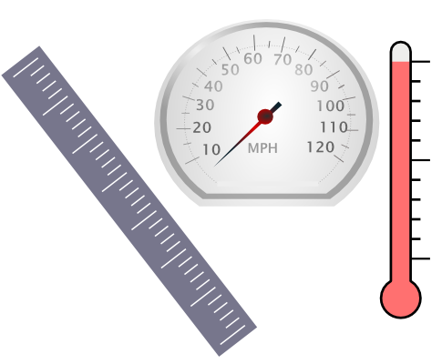

Annotate numbers and measurement expressions in text. This pipeline recognises many types of measurements including length, temperature, time and speed, and calculates their normalised values in the SI system of units. These annotations are ideal for indexing with Mímir, which supports queries in one unit matching results expressed in another.
As a side-effect this pipeline also annotates tokens and sentences.